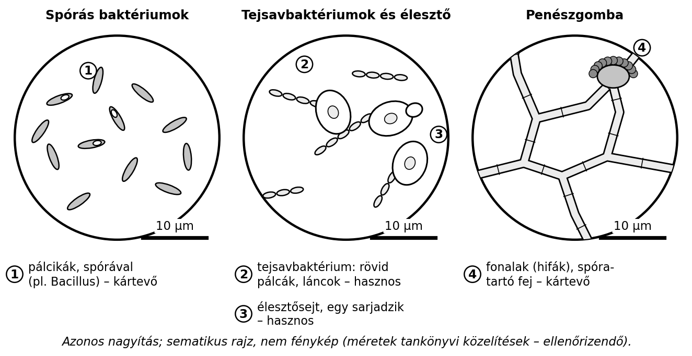

A pékségben dolgozva nap mint nap találkozol a mikroorganizmusok hatásával: a kenyér megkel, a kovász savanykás illatú lesz, de előfordulhat az is, hogy a tészta összeesik, a kenyér nyúlós, dohos vagy penészes lesz. Ha érted, hogy ezek az apró, szabad szemmel nem látható élőlények milyen feltételek között szaporodnak, akkor tudatosan tudod vezetni a kovászt, biztonságosan tudod hűteni a töltelékes terméket, és el tudod kerülni a romlást vagy az élelmiszer-fertőzést. Ez a tudás az egész szakmai munkádban visszatér: a kelesztéstől a takarításig, a HACCP-ellenőrzéstől a lisztvizsgálatig.
Képzeld el a pékséget mikroszkopikus városként: a lisztben, a vízben, a levegőben, az eszközökön és a kezeden is mikrobák milliárdjai élnek. Egy részük dolgozik nekünk – ilyen a sütőélesztő és a kovász tejsavbaktériumai –, más részük viszont rontja a terméket, vagy megbetegítheti a fogyasztót. A feladatod nem az, hogy minden mikrobát elpusztíts, hanem az, hogy a megfelelő mikrobáknak kedvezz, a veszélyeseket pedig a környezeti feltételek szabályozásával visszaszorítsd.
Definíció. A mikroorganizmusok (mikrobák) olyan apró élőlények, amelyek szabad szemmel általában nem láthatók; megfigyelésükhöz mikroszkópra vagy kitenyésztésre van szükség. A sütőiparban három nagy csoportjuk lényeges: a baktériumok, az élesztőgombák és a penészgombák.
Baktériumok. Egysejtű élőlények, amelyek osztódással szaporodnak. Méretük a milliméter ezredrészénél is kisebb lehet. A pékségben vannak hasznos baktériumok – a kovászban a tejsavbaktériumok –, és károsak is, például a nyúlósodást okozó spórás baktérium vagy az élelmiszer-fertőzést okozó kórokozók. A baktériumok egy része kedvezőtlen körülmények között spórát képez. A spóra olyan nyugvó, ellenálló alak, amely a hőt, a kiszáradást és a vegyszereket is jobban tűri, mint a szaporodó sejt. A spóra a kedvező feltételek visszatérésekor újra aktív sejtté alakulhat.
Élesztőgombák (élesztők). Szintén egysejtű gombák, de a baktériumoknál nagyobbak. A sütőipar legfontosabb hasznos mikrobája a Saccharomyces cerevisiae, a sütőélesztő. Cukor jelenlétében szén-dioxidot és alkoholt termel, ettől kel meg a tészta. Az élesztők is okozhatnak hibát: vadélesztők vagy élesztő eredetű felületi elváltozások ronthatják a terméket.
Penészgombák (penészek). Többsejtű, fonalas gombák. A kenyéren, a lisztben vagy a gyümölcsön színes, bársonyos bevonatot képeznek. Spóráik a levegőben terjednek, és nagyon kis víztartalom mellett is képesek szaporodni. Egyes penészgombák toxint (mikotoxint) termelnek, amely már kis mennyiségben is egészségkárosító lehet. A toxin nem élőlény, hanem a mikroba által termelt mérgező anyag; a penész eltávolítása nem feltétlenül szünteti meg a toxin jelenlétét az élelmiszerben.
Figyelem. A penészes kenyeret nem elég megsütni vagy levágni róla a penészes részt. A penészfonalak a termék belsejébe is behatolhatnak, a toxin pedig ott maradhat. A penészes terméket élelmiszer-hulladékként kell kezelni.
A három csoport alakja és mérete mikroszkópban jól elkülönül. A lenti rajz három azonos nagyítású látómezőt mutat közös 10 µm-es méretléccel: (1) a spórás baktériumok pálcika alakúak, néhány sejtben világos, ovális spóra látszik; (2) a kovász tejsavbaktériumai rövid pálcák, gyakran láncokban; (3) az élesztősejtek ennél jóval nagyobbak, oválisak, és az egyiken kis „bimbó”, sarjadzás látszik; (4) a penész hosszú, elágazó fonalakból (hifákból) áll, amelyek végén spóratartó fej képződik.

A méretléchez viszonyítva a baktérium néhány mikrométeres, az élesztősejt nagyjából kétszer-háromszor akkora, a penészfonal pedig a teljes látómezőn átnyúlik (tankönyvi közelítés, ellenőrizendő). A spóra azért fontos a péknek, mert a sütést is túlélheti – a kenyér nyúlósodásánál erre még visszatérünk.
A mikrobák szaporodását a környezeti feltételek szabályozzák. Ha ezeket a feltételeket megérted, akkor a kovászban kedvező, a készterméknél pedig kedvezőtlen környezetet tudsz teremteni.
Tápanyag. A mikrobáknak vízre, szénforrásra, nitrogénforrásra, ásványi anyagokra és növekedési faktorokra van szükségük. A liszt, a tej, a tojás és a cukor kiváló tápanyagforrás a mikrobák számára is – ezért a nyers tészta, a töltelék és a nedves felület könnyen romlik.
Hőmérséklet. Minden mikroba számára van egy minimális, egy optimális és egy maximális hőmérséklet. A veszélyes hőmérséklet-tartomány az az intervallum, amelyben a legtöbb élelmiszer-eredetű baktérium gyorsan szaporodik; tanulási példaként gyakran kb. 5 °C és 60 °C között jelöljük meg (ellenőrizendő: a pékség HACCP-terve és a hatósági útmutató). Ezért a hűtendő termékeket legfeljebb 5 °C-on kell tartani, a meleg terméket legalább 63 °C-on (legfeljebb 2 óráig) tartani, vagy gyorsan lehűteni (tanulási érték, ellenőrizendő: HACCP-terv, hatósági útmutató); az 5–60 °C sáv csak szemléltetés. A sütés során a kenyér bélzete a sütés végére legalább 96 °C-ra (jellemzően 96–98 °C) melegszik (tanulási érték, ellenőrizendő: HACCP-terv; termékspecifikus eltérés: Sütési eljárások, különleges sütés, átsültség és elősütés), ami elpusztítja a szaporodó sejteket, de a spórák egy része túlélheti – ezt a kenyér nyúlósodásánál látjuk majd viszont.
Vízaktivitás. A vízaktivitás (jele ) azt mutatja meg, hogy a termékben lévő víz mekkora hányada elérhető a mikrobák számára. Tiszta víz vízaktivitása . A liszt, a száraz tészta vagy a kétszersült vízaktivitása alacsony, ezért azokon a penészgombák jobban boldogulnak, mint a baktériumok. A friss kenyér belének vízaktivitása magas (kb. 0,95–0,98 – tankönyvi példa, ellenőrizendő), ezért a kenyér nedves, meleg környezetben gyorsan romlik. A só és a cukor csökkenti a vízaktivitást: a cukrozott töltelék vagy a sós felület részben ezért is tartósabb.
pH, azaz a savasság. A pH-érték kifejezi, mennyire savas vagy lúgos a közeg. A pH 7 semleges, 7 alatt savas, fölötte lúgos. A legtöbb baktérium a semlegeshez közeli pH-t kedveli, a penészgombák és az élesztők viszont savas közegben is jól érzik magukat. A kovászban a tejsavbaktériumok tejsavat termelnek, ettől csökken a pH, és a savas közeg visszaszorítja a nemkívánatos baktériumokat. Ez a kovász természetes tartósító hatása.
Oxigén. A mikroorganizmusokat oxigénigényük szerint is csoportosítjuk. A penészgombák és a sütőélesztő oxigén jelenlétében jól szaporodnak; a sütőélesztő azonban oxigén nélkül is képes cukorból szén-dioxidot termelni, ezért kel a tészta. Vannak olyan baktériumok, amelyek oxigén nélkül vagy éppen oxigén jelenlétében nem tudnak szaporodni. A lezárt, vákuumozott csomagolásban az oxigén hiánya a penészeket gátolja, de egyes anaerob baktériumok továbbra is szaporodhatnak.
Idő. A mikrobák szaporodásához idő kell. Minél tovább áll egy nedves, meleg, tápanyagban gazdag anyag, annál nagyobb a kockázat. Ezért a tésztát, a tölteléket és a hűtendő alapanyagot nem szabad a veszélyes hőmérséklet-tartományban hosszú ideig hagyni.
Az alábbi kis táblázat összefoglalja, hogyan szabályozzuk az életfeltételeket a pékségben:
| Életfeltétel | Pékségi szabályozás |
|---|---|
| hőmérséklet | hűtés, fagyasztás, sütés, kelesztőkamra hőmérséklete |
| vízaktivitás | sózás, cukrozás, szárítás, sütés |
| pH | kovász savanyítása, savanyú tészta |
| oxigén | csomagolás, lefedés, vákuumozás |
| tápanyag | tisztítás, takarás, alapanyag-felhasználás sorrendje |
| idő | késleltetett kelesztés, gyors feldolgozás, hűtve tárolás |
Továbbvitt eredmény. A mikroba-életfeltételek (hőmérséklet, vízaktivitás, pH, oxigén, idő) kulcsszerepet játszanak a kovászérés, a tésztaérés, a hűtés és a HACCP-rendszer szabályozásában. Ezt a tudást használjuk az A kovászolás célja és a kovász technológiai mutatói, az A kovászérés folyamatai és a kovász érettsége, valamint az A mikrobák gátlása és elpusztítása alfejezetben is.
Ha egy mikrobát kedvező környezetbe helyezünk, a sejtszám jellegzetes görbe szerint változik. Ezt mutatja a következő ábra is.
Az ábra tanulási szemléltetés: az tengelyen a sejtszám logaritmusát tüntettük fel, mert így az exponenciális szaporodás jól látható egyenes szakaszt ad. A valódi adatok a mikroba fajától, a tápközegtől és a hőmérséklettől függenek. A sávok a lent részletezett négy szakaszt jelölik: lag (0–2 óra), log (2–5 óra), stacioner (5–7 óra) és pusztulási (7–10 óra). A log szakaszban a görbe óránként egy egységet emelkedik, vagyis a sejtszám óránként tízszereződik; ez kb. 18 perces generációs időnek felel meg, mert , és . A HTML-kiadásban a görbe alatti kalkulátorral a lenti képlet a fejezet példáira kipróbálható.
A szaporodási görbe négy fő szakasza:
Definíció. A generációs idő az az időtartam, amely alatt egy mikrobaállomány sejtszáma optimális körülmények között megduplázódik. Jele , mértékegysége rendszerint perc vagy óra.
Összefüggés. Az exponenciális szakaszban a sejtszám a
képlettel becsülhető, ahol a kiindulási sejtszám, a sejtszám a idő elteltével, pedig a generációs idő. Ez a képlet azt fejezi ki, hogy minden generációs idő alatt duplázódik a sejtszám.
Megjegyzés. A sütőipari gyakorlatban nem a teljes szaporodási görbe mérését kell elvégezned, hanem a friss kovász, az élesztő aktivitása vagy a tészta savfoka alapján kell megítélned, hogy a hasznos mikrobák az aktív szakaszban vannak-e. A laboratóriumi sejtszámmolás meghaladja a pék szakma alapfeladatait, de az elvet ismerned kell ahhoz, hogy a termékhibákat megértsd.
Példa. Egy tésztában a sütőélesztő generációs ideje tanulási példaként 1,5 óra (ellenőrizendő: az élesztő törzse, hőmérséklete és a tápközeg szerint eltérő). Kiinduláskor a tészta átlagos élesztősejtszáma . Mennyi lesz a sejtszám 6 óra elteltével, ha az élesztő folyamatosan exponenciálisan szaporodik?
Keresett: .
Képlet:
Behelyettesítés:
A kitevő:
Így:
Ellenőrzés. A kitevő 4, tehát négy duplázódás történt: . Az eredmény nagyságrendje reális. ∎
Számítás. Egy baktérium generációs ideje 20 perc. Hány baktérium lesz 2 óra elteltével 1 kiindulási sejtből, ha nincs gátló tényező és minden sejt osztódik?
Adott: , , .
Keresett: .
Képlet:
Behelyettesítés:
Ellenőrzés. Húszperces generációs idővel 120 perc alatt 6 generáció, azaz . Reális. ∎
Figyelem. A valóságban a korlátlan szaporodás hamar leáll, mert a tápanyag elfogy, a hőmérséklet és a pH megváltozik, a bomlástermékek felhalmozódnak. A fenti számítás csak az exponenciális szakasz becslésére alkalmas.
Sütőélesztő. A Saccharomyces cerevisiae a legfontosabb hasznos mikroba a sütőiparban. Cukorból és oxigén nélkül is – alkoholos erjedéssel – szén-dioxidot és etanolt termel. A szén-dioxid lazítja a tésztát, az etanol nagy része sütés közben eltávozik, de kis része hozzájárul az ízhez. Az élesztő abban a hőmérséklet-tartományban aktív, amelyet a tésztakészítésnél is használunk: körülbelül 25–35 °C között jól dolgozik, 40 °C fölött működése gyorsan csökken, 55–60 °C körül pedig elpusztul (tanulási példa, ellenőrizendő: az élesztő gyártói adatlapja). A tészta hőmérsékletének számításánál ezért mindig figyelembe kell venni a dagasztóvíz hőmérsékletét, ahogy azt a Tésztahőmérséklet és dagasztóvíz számítása alfejezetben tárgyaljuk.
Tejsavbaktériumok a kovászban. A kovászban a lisztből és a levegőből származó tejsavbaktériumok szaporodnak el. Tejsavat és ecetsavat termelnek, ettől csökken a kovász pH-ja. A savasság gátolja a nemkívánatos baktériumokat, javítja a kenyér ízét, eltarthatóságát és a bélzet rugalmasságát. A kovász tehát egy irányított mikrobiális rendszer: az általunk szabályozott hőmérséklet, vízmennyiség, etetési idő és lisztfajta határozza meg, hogy inkább tejsavas vagy ecetsavas irányba megy az erjedés.
HACCP. A mikroba-szaporodás szempontjából kritikus pont lehet a nyersanyag-átvétel, a hűtött tárolás, a kelesztési idő, a késztermék hűtése és a csomagolás előtti várakozás. A kritikus határ (például a hűtő hőmérséklete, a kelesztési idő vagy a termék bélhőmérséklete) mindig a pékség HACCP-tervéből és a hatósági útmutatóból ellenőrizendő. Általános élelmiszer-higiéniai alapelv, hogy a gyorsan romló anyagot ne hagyd 5–60 °C között (ellenőrizendő: HACCP-terv, hatósági útmutató). A kovász és a tészta ellenőrzésekor figyeld a hőmérsékletet, a savfokot és a megkeltséget, mert ezek jelzik a hasznos mikroflóra állapotát.
Egy pékségben a pék a reggeli műszakban azt tapasztalta, hogy a hűtőkamrában tárolt töltelékes kakaós csiga tésztája ragacsossá vált, savanyú szagú lett, és a csomagolás alatt megemelkedett a felület. A műszakvezető végiggondolta a feltételeket: a hűtőkamra éjjel leállt, a belső hőmérséklet több órán át 12–14 °C volt a tervezett legfeljebb 5 °C helyett. A kakaós töltelék és a tészta nedvességtartalma magas, a tészta pedig cukrot, tejet és tojást is tartalmazott, ami kiváló tápanyag a baktériumoknak. A hosszú idő, a megfelelő tápanyag és a nem elég alacsony hőmérséklet együtt lehetővé tette a nemkívánatos mikrobák gyors szaporodását. A teljes tételt elkülönítették és selejtezték, a mért hőmérsékletet, az időtartamot és a döntést dokumentálták, a hűtőt megjavíttatták, és bevezették a hőmérséklet-folyamatos naplózását. A tanulság: egyetlen életfeltétel (a hőmérséklet) kiesése is elég ahhoz, hogy a veszélyes tartományban a mikrobák elszaporodjanak.
Cél: gyakorold annak felismerését, hogy a pékségben hol és milyen feltételek segíthetik a hasznos vagy a káros mikrobákat.
Eszközök és anyagok: infravörös vagy szúrópróba-hőmérő, savfokmérő vagy pH-mérő (ha van), jegyzetlap, a kovász és a hűtő környezete.
Higiénia. Tiszta munkaruha, hajháló, ékszer nélkül. Kézmosás előtte és utána. A mintavételhez tiszta eszközt használj. Ne nyúlj a termékhez puszta kézzel.
Gépbiztonság. Ha hűtőkamrába vagy kelesztőbe lépsz, ellenőrizd, hogy az ajtó nem csukódik rád, és a berendezés áramellátása biztonságos. Nedves kézzel ne érints elektromos eszközt.
Számozott lépések:
Ellenőrzési pontok: a kovász kellemesen savanykás, nem rothadó szagú; a hűtő hőmérséklete a HACCP-terv szerinti tartományban van; a munkafelület tiszta és száraz.
Tipikus hibák: a termék megkóstolása nyers állapotban; a hűtő ajtajának nyitva hagyása; a hőmérő szúrószondájának tisztítás és fertőtlenítés nélküli használata (keresztszennyeződés); az észlelt eltérés elhallgatása.
Dokumentálás: jegyzeteld a mért értékeket, az időpontot és az eltérés kezelését. A hűtő hőmérsékletét a pékségben a HACCP-monitoring részeként naplózni kell.
Tünet: a kovász rossz szagú, a kenyér nyúlós lesz. Ok: a kovászban nem a tejsavbaktériumok, hanem nemkívánatos, spórás baktériumok szaporodtak el, mert a hőmérséklet és a savfok nem volt megfelelően vezetve. Megelőzés/javítás: a kovászt rendszeresen etetjük, a hőmérsékletét és érettségét ellenőrizzük, a túlérett kovászt nem használjuk fel.
Tünet: a penészes kenyérből a penészt levágják, és a maradékot kiadják. Ok: félreértés, hogy a penész csak a felszínen van. A fonalak és a toxinok a bélben is lehetnek. Megelőzés: a penészes terméket mindig selejtezni kell, a penészes eszközt pedig fertőtleníteni.
Tünet: a hűtőkamra 10 °C, a töltelékes termék mégis bent van. Ok: a veszélyes hőmérséklet-tartományt nem tartják ellenőrzés alatt. Megelőzés: a hőmérsékletet folyamatosan vagy rendszeresen mérik, a kamrát legfeljebb 5 °C-on tartják (ellenőrizendő: a pékség HACCP-terve).
1. feladat (A) Definiáld a mikroorganizmus és a spóra fogalmát.
2. feladat (A) Sorold fel a mikroorganizmusok fő életfeltételeit, és mindegyikhez írj egy pékségi szabályozási lehetőséget.
3. feladat (B) Egy élesztőtörzs generációs ideje 90 perc. Kiinduláskor élesztő van a tésztában. Mennyi lesz a sejtszám 4,5 óra elteltével, ha az exponenciális szakaszban marad?
4. feladat (B) Rajzold le a szaporodási görbe vázlatát, és jelöld, melyik szakaszban a legaktívabb az élesztő gáztermelése.
5. feladat (C) Egy pékségben a kakaós csiga töltelékes tésztáját a hűtőkamra helyett egy meleg kelesztőben felejtik 3 órán át. Milyen életfeltételek változtak, és milyen kockázatot jelentenek ezek a változások?
6. feladat (D) Válassz ki egy hűtőt a tanpékségben, mérd meg a hőmérsékletét, és becsüld meg, hogy a mért érték a veszélyes hőmérséklet-tartományba esik-e. Jegyezd fel, milyen termékeket tárolnak benne, és írd le, miért fontos a hőmérséklet.
Önellenőrzés – válaszok
1. feladat megoldása
A mikroorganizmus szabad szemmel nem látható apró élőlény. A spóra a baktérium ellenálló, nyugvó alakja, amely a kedvezőtlen körülményeket túléli, és később aktív sejtté alakulhat.
2. feladat megoldása
Hőmérséklet: hűtés, sütés. Vízaktivitás: sózás, cukrozás, szárítás. pH: kovász savanyítása. Oxigén: csomagolás, vákuumozás. Tápanyag: tisztítás, a munkafelület takarítása. Idő: gyors feldolgozás, hűtve tárolás.
3. feladat megoldása
Adott: , , .
Keresett: .
Képlet:
Behelyettesítés:
Ellenőrzés: három generáció, azaz . Reális. ∎
4. feladat megoldása
A görbe négy szakaszra bontható: lapos lag szakasz, gyorsan emelkedő log szakasz, ellaposodó stacioner szakasz, majd csökkenő szakasz. A legaktívabb élesztő-gáztermelés a log (exponenciális) szakaszban van, amikor a sejtszám gyorsan nő és a szén-dioxid-termelés intenzív. A tankönyvi ábrát lásd fentebb.
5. feladat megoldása
A meleg kelesztőben magasabb a hőmérséklet, így a tészta a veszélyes tartományba kerülhet. A tápanyag (tej, tojás, cukor, liszt) adott, a vízaktivitás magas, a pH közel semleges, és az idő 3 órán át elegendő a szaporodáshoz. Mindez a nemkívánatos baktériumok gyors szaporodásához, romláshoz, sőt élelmiszer-fertőzés kockázatához vezethet. A tételt azonnal el kell különíteni; 3 óra meleg kelesztőben tartott, tojásos-tejes töltelékes tésztát a HACCP-terv szerint jellemzően selejtezni kell (ellenőrizendő: HACCP-terv); a döntést dokumentálni kell, és a hibás tárolási gyakorlatot javítani.
6. feladat megoldása
A mért hőmérsékletet hasonlítsd össze a HACCP-terv határértékével. Ha legfeljebb 5 °C (ellenőrizendő), a tárolás megfelelő; ha 5–60 °C közé esik, a termékek a veszélyes hőmérséklet-tartományban vannak (meleg tartásnál a határ legalább 63 °C), és intézkedni kell: a hűtőt beállítani, a termékeket áthelyezni, a hibát jelenteni. A jegyzőkönyvben rögzítsd a mért értéket, az időpontot és a termékeket.
A sütőiparban baktériumokkal, élesztőgombákkal és penészgombákkal dolgozunk. A baktériumok osztódással szaporodnak, kedvezőtlen körülmények között spórát képezhetnek; a penészek fonalas gombák, és toxint is termelhetnek. A mikrobák életfeltételei: tápanyag, hőmérséklet, vízaktivitás , pH, oxigén és idő. A veszélyes hőmérséklet-tartomány tanulási példaként kb. 5–60 °C (szemléltetés; a melegen tartás tanult határa legalább 63 °C, ellenőrizendő: a pékség HACCP-terve). A szaporodási görbe szakaszai: lag, log, stacioner és csökkenő szakasz; a generációs idő a duplázódás ideje, az exponenciális szakaszban . A hasznos mikrobák közül a sütőélesztő cukorból szén-dioxidot termel, a kovász tejsavbaktériumai savanyítják a tésztát és gátolják a nemkívánatos baktériumokat. A mikroba-életfeltételek ismeretét a kovászolás, a tésztaérés, a hűtés és a HACCP-rendszer építi fel; ezt használjuk az A kovászolás célja és a kovász technológiai mutatói, A kovászérés folyamatai és a kovász érettsége és A mikrobák gátlása és elpusztítása alfejezetekben.
A fejezet az általános mikrobiológiai, sütőipari technológiai és élelmiszer-higiéniai alapelvekre épül, nem hivatkozik konkrét, szó szerint idézett jogszabályra. Az 5–60 °C veszélyes hőmérséklet-tartomány, az és pH-értékek, az élesztő hőmérsékleti határai és a generációs idő példái tanulási, szemléltető példák, amelyeket a kiadás előtt ellenőrizni kell a hatályos élelmiszer-higiéniai előírások, a pékség HACCP-terve, a gyártói adatlapok és a Magyar Élelmiszerkönyv szerint. A konkrét rendeletszámok és határértékek bemutatása az Élelmiszerjog, HACCP és allergének fejezetben és a gyakorlati technológiai lapoknál történik.